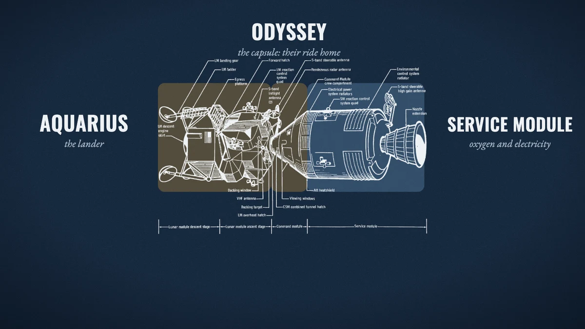
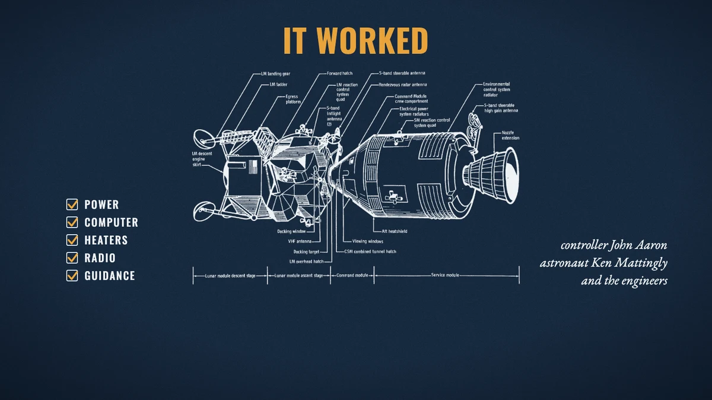
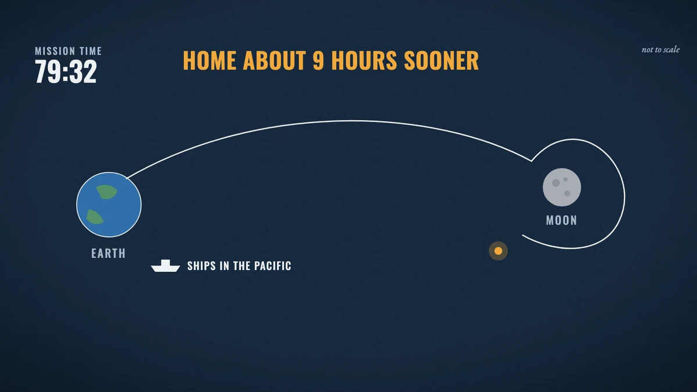
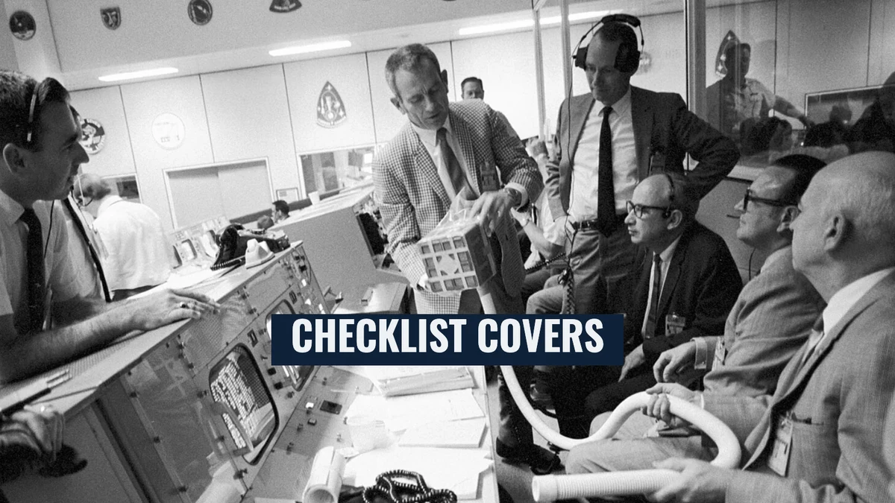

One article, checked
The film starts from one Wikipedia article, “Apollo 13”, pinned to the revision of 18 November 2026. Every time and number in it was traced back to NASA's own papers: the Mission Evaluation Report of September 1970, the air-to-ground transcript and the Apollo Flight Journal. Where they disagree with the article, the film follows NASA. The article puts Lovell's “Houston, we've had a problem” seven seconds late, and gives the end of two engine burns as their start; the film uses the corrected times. Where the sources disagree with each other, it says less: the farthest distance from Earth has two published values, so the film says “farther from Earth than anyone had ever been” and leaves the number out. Even “a successful failure” was checked: the words are Jim Lovell's own, in NASA's Apollo Expeditions to the Moon (1975).
The real voices first
The film opens on the actual radio recording from 13 April 1970, nine seconds of it, before any narration. A trace drawn from the recording's own loudness moves as each man speaks, and their words are typed as you hear them, under the names the corrected Flight Journal gives. No picture from the 1995 film and no actor's voice is used anywhere.
A spaceship in three parts
Young viewers need to know which part is which before the story can make sense: the capsule they ride home in, the service module that held the oxygen, and the lander that became a lifeboat. A NASA drawing of the docked spacecraft comes back four times, and each time the part the story is about lights up or goes dark.


Where they were, and when
One drawn route, from Earth around the Moon and back, carries the trip. A dot shows where the crew were and a mission clock shows the hours since launch: 55:54 when the tank burst, 61:29 for the 34-second burn that set them on a path around the Moon, 79:32 when the longer push ended. The route is a picture, labelled “not to scale”; the clock's times are NASA's.

How it was made
- Research. The article and NASA's reports, saved with their revision numbers; a list of 25 times and what each one counts.
- Script and storyboard, shown to the owner before anything was voiced, with plain words for elementary-school readers.
- Voice. ElevenLabs v4, the voice “Roger”, sped up 1.1 times; the word times it returns place every move on screen.
- Pictures. Sixteen NASA photographs and drawings from Wikimedia Commons, each with its licence checked.
- Music. Holst's The Planets, played by the U.S. Air Force Band and the U.S. Marine Band: Jupiter for the launch and the homecoming, Mercury for the trouble and the fix, Neptune behind the Moon.
- Review. The film exported as a video and watched by a fresh Claude, with no memory of making it, as a director.

The numbers
The research, the script, the code for every beat and the review were done by Claude (Opus) with the Papermorph Skill.


.jpg){kind=link}


.jpg){kind=link}
.jpg){kind=link}
.jpg){kind=link}
.jpg){kind=link}